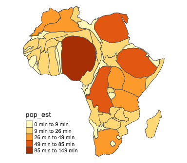

Construct a continuous area cartogram by a rubber sheet distortion algorithm (Dougenik et al. 1985), non-contiguous Area Cartograms (Olson 1976), and non-overlapping Circles Cartogram (Dorling el al. 1996) in R.
Installation
You can install the cartogram package from CRAN as follows:
install.packages("cartogram")To upgrade to the latest development version of cartogram, install the package devtools and run the following command:
devtools::install_github("sjewo/cartogram")NEWS
-
0.2.0
Migrated all functions to sf, fixed problems with multipolygons. cartogram functions won’t accept features with longitude/latitude coordinates anymore. -
0.1.1
Speedup sf code -
0.1.0
Non-Overlapping Circles Cartogram (Dorling) -
0.0.3
sf support added -
0.0.2
Non-contiguous Area Cartogram -
0.0.2
Prepare data with missing or extreme values before cartogram calculation for faster convergence -
0.0.1
Initial Release
Examples
Continuous Area Cartogram
library(cartogram)
library(tmap)
library(maptools)
#> Loading required package: sp
#> Checking rgeos availability: TRUE
data(wrld_simpl)
# keep only the african continent
afr <- wrld_simpl[wrld_simpl$REGION == 2, ]
# project the map
afr <- spTransform(afr, CRS("+init=epsg:3395"))
# construct cartogram
afr_cont <- cartogram_cont(afr, "POP2005", itermax = 5)
#> Warning in CPL_crs_from_proj4string(x): GDAL Message 1: +init=epsg:XXXX syntax
#> is deprecated. It might return a CRS with a non-EPSG compliant axis order.
#> Mean size error for iteration 1: 5.79457153280442
#> Mean size error for iteration 2: 4.94825547349441
#> Mean size error for iteration 3: 4.32626995057149
#> Mean size error for iteration 4: 3.84940324694301
#> Mean size error for iteration 5: 3.45917774259599
# plot it
tm_shape(afr_cont) + tm_polygons("POP2005", style = "jenks") +
tm_layout(frame = FALSE, legend.position = c("left", "bottom"))
Non-contiguous Area Cartogram
Many thanks to @rCarto and @neocarto for contributing the code!
# construct cartogram
afr_ncont <- cartogram_ncont(afr, "POP2005")
# plot it
tm_shape(afr) + tm_borders() +
tm_shape(afr_ncont) + tm_polygons("POP2005", style = "jenks") +
tm_layout(frame = FALSE, legend.position = c("left", "bottom"))
Non-Overlapping Circles Cartogram
Many thanks to @rCarto for contributing the code!
# construct cartogram
afr_dorling <- cartogram_dorling(afr, "POP2005")
# plot it
tm_shape(afr) + tm_borders() +
tm_shape(afr_dorling) + tm_polygons("POP2005", style = "jenks") +
tm_layout(frame = FALSE, legend.position = c("left", "bottom"))sf support
Thanks to @Nowosad for speeding things up!
library(sf)
#> Linking to GEOS 3.8.0, GDAL 3.0.2, PROJ 6.2.1
# Create an sf object
afr_sf <- st_as_sf(afr)
# Continuous Area Cartogram
afr_sf_cont <- cartogram_cont(afr_sf, "POP2005", 3)
#> Mean size error for iteration 1: 5.79457153280442
#> Mean size error for iteration 2: 4.94825547349441
#> Mean size error for iteration 3: 4.32626995057149
# Non-contiguous Area Cartogram
afr_sf_ncont <- cartogram_ncont(afr_sf, "POP2005")
# Non-overlapping Circles Cartogram
afr_sf_dorling <- cartogram_dorling(afr_sf, "POP2005")
# Plots
m1 <- tm_shape(afr_sf_cont) + tm_polygons("POP2005", style = "jenks", legend.show = FALSE) +
tm_layout(frame = FALSE)
m2 <- tm_shape(afr_sf) + tm_borders() +
tm_shape(afr_sf_ncont) + tm_polygons("POP2005", style = "jenks", legend.show = FALSE) +
tm_layout(frame = FALSE)
m3 <- tm_shape(afr_sf) + tm_borders() +
tm_shape(afr_sf_dorling) + tm_polygons("POP2005", style = "jenks", legend.show = FALSE) +
tm_layout(frame = FALSE, legend.outside = TRUE)
ml <- tm_shape(afr_sf_dorling) + tm_polygons("POP2005", style = "jenks") +
tm_layout(frame = FALSE, legend.only = TRUE, legend.position = c("center", "center"))
tmap_arrange(m1, m2, m3, ml, nrow = 1)References
- Dorling, D. (1996). Area Cartograms: Their Use and Creation. In Concepts and Techniques in Modern Geography (CATMOG), 59.
- Dougenik, J. A., Chrisman, N. R., & Niemeyer, D. R. (1985). An Algorithm To Construct Continuous Area Cartograms. In The Professional Geographer, 37(1), 75-81.
- Olson, J. M. (1976), Noncontiguous Area Cartograms. The Professional Geographer, 28: 371–380. doi:10.1111/j.0033-0124.1976.00371.x